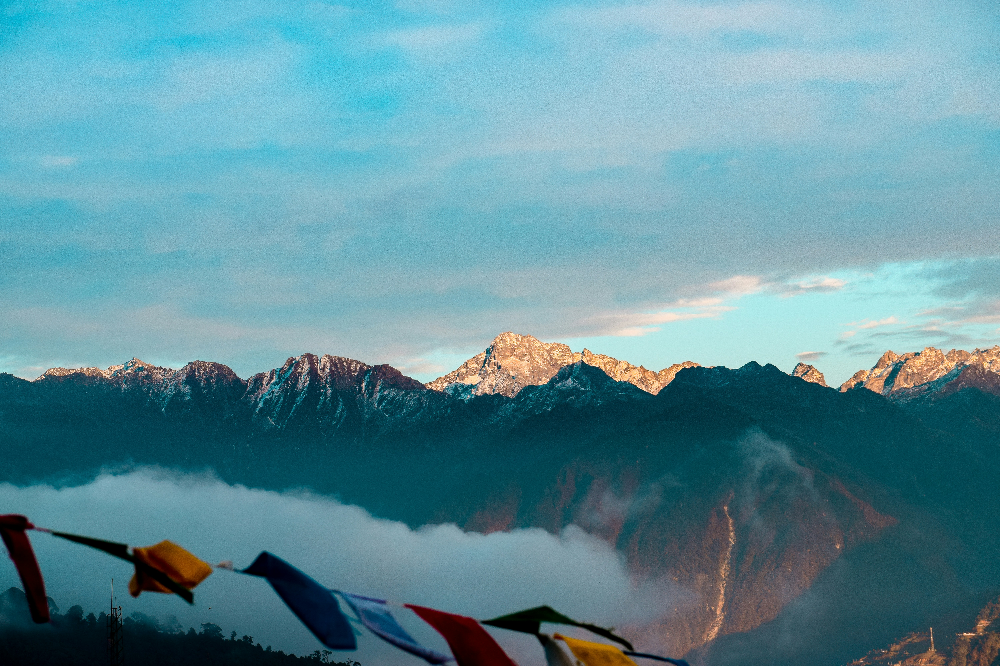

Tawang
Experience the celestial calm of Tawang, home to India’s largest and the world’s second-largest Buddhist monastery. Founded in the 17th century at a site "chosen by a horse," the Tawang Monastery stands like a grand fortress guarding the valley, its massive yellow-roofed buildings housing a magnificent 28-foot golden Buddha. As you wander through the residential quarters where hundreds of monks chant in unison, the spiritual heritage of the Monpa people comes alive. Beyond the prayer wheels, the rugged journey through the snow-bound Sela Pass and the tranquil high-altitude lakes offers a profound sense of peace in the heart of the Eastern Himalayas.